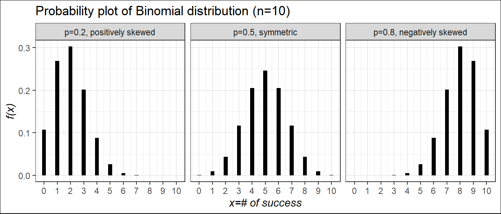
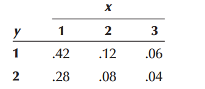
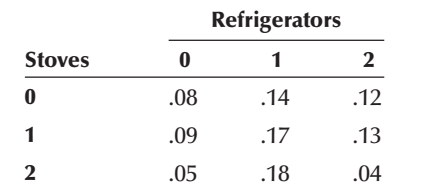

5 Discrete Probability Distributions
5.1 Discrete random variable and Probability mass function (PMF)
Suppose \(X\) is a discrete random variable. The probability mass function (PMF) of \(X\) can be denoted as \(f(x)\) where
\[ f(x)=P(X=x) \]For each possible outcome \(x\) ; \(f(x)\) must satisfies:
\[f(x) \ge 0\]
\[\sum _x f(x)=1\]
The PMF \(f(x)\) is also called probability distribution of the discrte random variable \(X\).
Example 5.1 John Ragsdale sells new cars for Pelican Ford. John usually sells the largest number of cars on Saturday. He has developed the following probability distribution for the number of cars he expects to sell on a particular Saturday.
| Number of cars sold, \(x\) | Probability, \(f(x)\) |
| 0 | 0.10 |
| 1 | 0.20 |
| 2 | 0.30 |
| 3 | 0.30 |
| 4 | 0.10 |
Compute (i) \(P(X=2)\) ; (ii) \(P(X<2)\) ; (iii) \(P(X \ge 3)\)
5.1.1 Expectation (Mean) of discrete random variable
Let \(X\) be a discrete random variable with probability mass function \(f(x) = P(X = x)\).
The expected value of \(X\) the mean of \(X\) is denoted by \(E(X)\) and defined by:
\[ E(X)=\sum_x x.f(x) \]
The expected value of \(X\) is sometimes called the population mean of \(X\) that is \(\mu=E(X)\).
Example 5.2 John Ragsdale sells new cars for Pelican Ford. John usually sells the largest number of cars on Saturday. He has developed the following probability distribution for the number of cars he expects to sell on a particular Saturday.
| Number of cars sold, \(x\) | Probability, \(f(x)\) |
| 0 | 0.10 |
| 1 | 0.20 |
| 2 | 0.30 |
| 3 | 0.30 |
| 4 | 0.10 |
On a typical Saturday, how many cars does John expect to sell?
Solution:
| \(x\) | \(f(x)\) | \(x \cdot f(x)\) |
|---|---|---|
| 0 | 0.10 | 0.00 |
| 1 | 0.20 | 0.20 |
| 2 | 0.30 | 0.60 |
| 3 | 0.30 | 0.90 |
| 4 | 0.10 | 0.40 |
| Total | \(\sum f(x)=1\) | \(\mu =\sum x\cdot f(x)=2.10\) |
Alternative: The mean number of cars is:
\[\mu =E[X]=\sum_{x=0}^4 x.f(x)\]
\[=0(0.10)+1(0.20)+2(0.30)+3(0.30)+4(0.10)=2.1\]
So on a typical Saturday, John Ragsdale expects to sell a mean of 2.1 cars a day.
5.1.2 Variance of discrete random variable
Let \(X\) be a discrete random variable with probability distribution \(f(x)\) and mean \(\mu\). The variance of \(X\) is
\[var(X)=\sigma^2 =E[(X-\mu)^2]=\sum_x (x-\mu)^2 f(x)\]Alternative:
\[var (X)=E(X^2)-\mu^2\] Where,
\[E(X^2)=\sum_{x} x^2.f(x)\]
Example 5.3: From Example 5.2 compute variance and standard deviation of \(X\).
Solution: From Example 5.2 we have \(\mu =2.1\).
| \(x\) | \(f(x)\) | \(x-\mu\) | \((x-\mu)^2\) | \((x-\mu)^2 f(x)\) |
|---|---|---|---|---|
| 0 | 0.10 | -2.1 | 4.41 | 0.441 |
| 1 | 0.20 | -1.1 | 1.21 | 0.242 |
| 2 | 0.30 | -0.1 | 0.01 | 0.003 |
| 3 | 0.30 | 0.9 | 0.81 | 0.243 |
| 4 | 0.10 | 1.9 | 3.61 | 0.361 |
| Total | \(\sum f(x)=1\) | \(\sigma^2 =1.290\) |
Alternative: Here,
\[E(X^2)=\sum_{x=0}^4 x^2.f(x)\]
\(=0^2(0.10)+1^2 (0.20)+2^2 (0.30)+3^2 (0.30)+4^2 (0.10)\)
\(=5.70\)
Hence, \(var(X)=\sigma^2 =E(X^2)-\mu^2=5.70-(2.10)^2=1.29\)
The variance is, \(\sigma^2=1.29\) and
The standard deviation is, \(\sigma=\sqrt {1.29}=1.136\)
NoteProperties of E(.) and var(.)
If \(a\) and \(b\) are constants, then
a) \(E(b)=b\)
b) \(E(aX+b)=aE(X)+b\)
c) \(var(b)=0\)
d) \(var(aX+b)=a^2 \ \ var (X)\)
5.1.3 Exercise: Discrete random variable
5.1) Compute the mean and variance of the following probability distribution.
| \(x\) | \(f(x)\) |
| 5 | 0.10 |
| 10 | 0.30 |
| 15 | 0.20 |
| 20 | 0.40 |
5.2) The information below is the number of daily emergency service calls made by the volunteer ambulance service of Walterboro, South Carolina, for the last 50 days. To explain, there were 22 days on which there were 2 emergency calls, and 9 days on which there were 3 emergency calls.
| Number of calls | Frequency |
| 0 | 8 |
| 1 | 10 |
| 2 | 22 |
| 3 | 9 |
| 4 | 1 |
| Total | 50 |
a. Convert this information on the number of calls to a probability distribution.
b. Is this an example of a discrete or continuous probability distribution?
c. What is the mean number of emergency calls per day?
d. What is the standard deviation of the number of calls made daily?
5.3) Consider the following probability distribution of random variable \(X\):
| \(x\) | 1 | 3 | 5 | 7 |
| \(f(x)\) | k | 2k | 2k | 3k |
(i) Find the value of k.
(ii) Find the probability of the value of X exactly 4.
(iii) Find the probability of the value of X between 3 and 7 (inclusive).
(iv) Estimate expected value and standard deviation of X.
5.4) Suppose that an antique jewelry dealer is interested in purchasing a gold necklace for which the probabilities are 0.22, 0.36, 0.28, and 0.14, respectively, that she will be able to sell it for a profit of $250, sell it for a profit of $150, break even, or sell it for a loss of $150. What is her expected profit?
5.5) The monthly sales at a computer store have a mean of $25,000 and a standard deviation of $4,000. Profits are calculated by multiplying sales by 30% and subtracting fixed costs of $6,000. Find the mean and standard deviation of monthly profits.
5.6) When parking a car in a downtown parking lot, drivers pay according to the number of hours or parts thereof. The probability distribution of the number of hours cars are parked has been estimated as follows.
| \(x\) | 1 | 2 | 3 | 4 | 5 | 6 | 7 | 8 |
| \(f(x)\) | 0.24 | 0.18 | 0.13 | 0.10 | 0.07 | 0.04 | 0.04 | 0.20 |
(a) Find the mean and standard deviation of the number of hours cars are parked in the lot.
(b) The cost of parking is $2.50 per hour. Calculate the mean and standard deviation of the amount of revenue each car generates.
5.2 Joint distribution of two discrete r.vs
The function \(f(x, y)\) is a joint probability distribution or probability mass function of the discrete random variables \(X\) and \(Y\) if
- \(f(x,y)\ge 0\) for all \((x,y)\),
- \(\sum_x \sum_y f(x,y)=1\),
- \(P(X=x, Y=y)=f(x,y)\)
5.2.1 Marginal distribution \(X\) and \(Y\) (discrete)
The marginal distributions of \(X\) alone and of \(Y\) alone are
- \(f_X(x)=\sum_y f(x,y)\)
- \(f_Y(y)=\sum_x f(x,y)\)
5.2.2 Stochastic independence of Jointly Distributed Random Variables
If \(f(x,y)=f_X(x)\times f_Y(y)\) for all \(x\) and \(y\) the then the random variables \(X\) and \(Y\) will said to be independent.
5.2.3 Covariance and correlation between \(X\) and \(Y\)
NoteCovariance
\[ Cov(X,Y)=\sigma_{XY}=E \left[ (X-\mu_X)(Y-\mu_Y)\right] \]
In other way,
\[ Cov(X,Y)=\sigma_{XY}=E(XY)-\mu_X\mu_Y \]
NoteCorrelation coefficient
\[ \rho=\frac{\sigma_{XY}}{\sigma_X \sigma_Y}\ \ ; -1\le\rho\le+1 \]
5.2.4 Laws of Expected Value and Variance of the Linear combination of Two Variables
Suppose a new random variable is \(Z\) as follows:
\[ Z=aX+bY \]
Where \(a\) and \(b\) are both constants.
- \(E(Z)=E(aX+bY)=aE(X)+bE(Y)\),
- \(Var(Z)=Var(aX+bY)=a^2 Var(X)+b^2 Var(Y)+2ab \ \ Cov (X,Y)\)
N.B: If \(X\) and \(Y\) are independent, \(Cov(X,Y ) = 0\).
5.2.5 Some problems on discrete joint distribution
Problem 1 The joint probability distribution of X and Y is shown in the following table.
| \(y\) | |||
|---|---|---|---|
| 1 | 2 | ||
| \(x\) | 1 | 0.3 | 0.2 |
| 2 | 0.1 | 0.4 |
Determine the marginal probability distribution of \(X\) and \(Y\) .
Find \(P(Y=1|X=2)\).
Compute \(E(X)\), \(E(Y)\) and \(Var(X)\), \(Var(Y)\).
Verify whether \(X\) and \(Y\) are independent or not.
Compute \(E(XY)\).
Compute \(Cov(X,Y)\) and correlation coefficient between \(X\) and \(Y\).
Derive the probability distribution of \(Z=X+Y\).
Problem 7.5.1 The joint probability distribution of X and Y is shown in the following table.

a. Determine the marginal distributions of \(X\) and \(Y\) .
b. Compute the covariance and coefficient of correlation between \(X\) and \(Y\) .
c. Develop the probability distribution of \(X + Y\) .
d. Find \(P(X+Y\le 3)\).
Problem 7.5.2 After analyzing several months of sales data, the owner of an appliance store produced the following joint probability distribution of the number of refrigerators and stoves sold daily.

a. Find the marginal probability distribution of the number of refrigerators sold daily.
b. Find the marginal probability distribution of the number of stoves sold daily.
c. Compute the mean and variance of the number of refrigerators sold daily.
d. Compute the mean and variance of the number of stoves sold daily.
e. Compute the covariance and the coefficient of correlation.
In the following sections we will discuss some commonly used discrete probability distributions which are used to predict number of success in finite number of random trials, or number of occurrence in a given interval or space and so on.
5.3 Bernoulli distribution/r.v
Bernoulli r.v comes from Bernoulli trial-a trial which has TWO possible outcomes (success or failure).
Consider the toss of a biased coin, which comes up a head with probability \(p\), and a tail with probability \(1 - p\). The Bernoulli random variable takes the two values 1 and 0, depending on whether the outcome is a head or a tail:
\[ X = \begin{cases} 1, & \mathrm{if \ \ HEAD \ \ appears}, \\ 0, & \mathrm{if \ \ TAIL \ \ appears} \end{cases} \]
PMF: \(P(X=x)=f(x)=p^x (1-p)^{1-x}; \ \ x=0,1\)
Mean: \(E(X)=p\)
Variance: \(Var(X)=p(1-p)\)
For all its simplicity, the Bernoulli random variable is very important. In practice, it is used to model generic probabilistic situations with just two outcomes, such as:
(a) The state of a telephone at a given time that can be either free or busy.
(b) A person who can be either healthy or sick with a certain disease.
(c) The preference of a person who can be either for or against a certain political candidate.
Furthermore, by combining multiple Bernoulli random variables, one can construct more complicated random variables.
Note
Derivation of Mean and Variance of Bernoulli r.v
Mean:
\[E(X)=\sum_{x=0}^1 x\cdot f(x)=(0) f(0)+(1)f(1)=0+1\cdotp p=p\]
Variance:
\(Var(X)=E(X^2)-[E(X)]^2=p-p^2=p(1-p)\)
5.4 Binomial r.v
In a Binomial experiment , the Bernoulli trial is repeated \(n\) times with the following conditions:
a) The trials are independent
b) In each trial \(P(success)=p\) remains constant
Suppose \(X=number \ \ of \ \ successs \ \ in \ \ n\ \ trials\). Then \(X\) is called a Binomial r.v or follows Binomial distribution.
PMF: \[P(X=x)=f(x)=\binom {n}{x} p^x (1-p)^{n-x} ; x=0,1,2,...,n\]
Mean: \(E(X)=np\)
Variance: \(Var(X)=np(1-p)\)
We write \(X\sim Bin (n,p)\)
NoteNote
If \(Y=number \ \ of \ \ failures\ \ in \ \ n\ \ trials\) then
\(Y\sim Bin(n,1-p)\)
NoteRelation between Bernoulli r.v and Binomial r.v
A Binomial Random Variable Is a Sum of Bernoulli Random Variables
Let, \(Y_i\) is a Bernoulli r.v appeared in \(i^{th}\) Bernoulli trial. If we conduct \(n\) independent Bernoulli trials then we have \(n\) independent Bernoulli r.vs such as \(Y_1, Y_2, ..., Y_n\). Each \(Y_i\) has values of either \(1\) or \(0\).
Now if \(X\) is a Binomial r.v then,
\[ X=Y_1+Y_2+...+Y_n =\sum_{i=1}^n Y_i \]
Note
Derivation of Mean and Variance of Binomial r.v
From previous note, we know if \(Y_i\) is a Bernoulli r.v then
\(E(Y_i)=p\) and \(Var(Y_i)=p(1-p)\)
So, the mean of Binomial r.v that is
\[ E(X)=E(Y_1+Y_2+...+Y_n) \]
\[ =E(Y_1)+E(Y_2)+...+E(Y_n) \]
\[ =p+p+...+p=np \]
Now, the variance of \(X\) is:
\[ Var(X)=Var(Y_1+Y_2+...+Y_n) \]
\[ =Var(Y_1)+Var(Y_2)+...+Var(Y_n) \]
\[ =p(1-p)+p(1-p)+...+p(1-p)=np(1-p) \]
Probability plot of binomial r.v for different values of \(p\) and shape characteristics
Example 5.4 Consider a binomial experiment with \(n = 10\) and \(p =0.30\).
a) Compute \(P(X=0)\) ; b) Compute \(P(X=2)\);
c) Compute \(P(X \le 1)\) ; d) Compute \(P(X\ge 2)\);
e) Compute \(E(X)\) ; f) Compute \(Var(X)\) and \(\sigma\).
Example 5.5 A manufacturer of window frames knows from long experience that 30 percent of the production will have some type of minor defect that will require an adjustment. What is the probability that in a sample of 20 window frames:
a) none will need adjustment?
b) at most two will need adjustment?
c) at least two will need adjustment?
d) Estimate the mean and standard deviation of number of adjustment.
Example 5.6 A certain type of tomato seed germinates 90% of the time. A backyard farmer planted 25 seeds.
a) What is the probability that exactly 20 germinate?
b) What is the probability that 23 or more germinate?
c) What is the probability that 24 or fewer germinate?
d) What is the expected number of seeds that germinate?
Example 5.7 A shoe store’s records show that 30% of customers making a purchase use a credit card to pay. This morning, 10 customers purchased shoes from the store. Answer the following:
a) Find the probability that at least 8 of the customers used a credit card.
b) What is the probability that at least three customers, but not more than five, used a credit card?
c) What is the expected number of customers who used a credit card? What is the standard deviation?
*d) Find the probability that exactly 5 customers did not use a credit card.
*e) Find the probability that at least nine customers did not use a credit card
5.5 Poisson r.v
In this section we consider a discrete random variable that is often useful in estimating the number of occurrences over a specified interval of time or space. For example, the random variable of interest might be
the number of arrivals at a car wash in one hour,
the number of repairs needed in 10 miles of highway, or
the number of leaks in 100 miles of pipeline.
PROPERTIES OF A POISSON EXPERIMENT
The probability of an occurrence is the same for any two intervals of equal length.
The occurrence or nonoccurrence in any interval is independent of the occurrence or nonoccurrence in any other interval.
Suppose \(X\) be the number occurrences in a given interval. Then,
PMF:
\[ P(X=x)=f(x)=\frac{\mu^x e^{-\mu}}{x!}\ \ ; \ \ x=0,1,2,...,\infty \]
Where, \(\mu\) is the expected value or mean number of occurrences in an interval.
Mean: \(E(X)=\mu\)
Variance: \(Var(X)=\mu\)
We write, \(X \sim Pois(\mu)\)
5.5.1 Finding probability of Poisson r.v
Let, \(X\) be a Poisson r.v with \(\mu=2.5\). Find the following probabilities using PMF:
i) \(P(X=2)\)
ii) \(P(X<=1)\)
iii) \(P(X>3)\)
5.5.2 The recursion formula for Poisson PMF
If \(X\sim Pois(\mu)\) then
\(P(X=k)=\frac{e^{-\mu} \mu^k }{k!}\) and
\(P(X=k-1)=\frac{e^{-\mu} \mu^{k-1} }{(k-1)!}\)
Hence we have
\[ \frac{P(X=k)}{P(X=k-1)}=\frac{\mu}{k} \]
\[ Hence, \ \ P(X=k)=\frac{\mu}{k}P(X=k-1) \]
So, for \(k=1\), \(P(X=1)=\frac{\mu}{1}P(X=0)\) Or,
\[ f(1)=\frac{\mu}{1}f(0) \]
\[ f(2)=\frac{\mu}{2}f(1) \]
\[ .\\ .\\ . \]
and so on.
Example 911 Calls. Emergency 911 calls to a small municipality in Idaho come in at the rate of one every 2 minutes. (Anderson 2020, page no. 261)
a. What is the expected number of 911 calls in one hour?
b. What is the probability of three 911 calls in five minutes?
c. What is the probability of no 911 calls in a five-minute period?
Example Airport Passenger-Screening Facility. Airline passengers arrive randomly and independently at the passenger-screening facility at a major international airport. The mean arrival rate is 10 passengers per minute. (Anderson 2020, page no. 261)
a. Compute the probability of no arrivals in a one-minute period.
b. Compute the probability that three or fewer passengers arrive in a one-minute period.
c. Compute the probability of no arrivals in a 15-second period.
d. Compute the probability of at least one arrival in a 15-second period.
Example Customers arrive at a busy checkout counter at an average rate of 3 per minute. If the distribution of arrivals is Poisson, find the probability that in any given minute there will be 2 or fewer arrivals.
Example The number of accidents in a production facility has a Poisson distribution with a mean of 2.6 per month.
a. For a given month what is the probability there will be fewer than 2 accidents?
b. For a given month what is the probability there will be more than 3 accidents?
5.5.3 Poisson Approximation to the Binomial Distribution
When,
\(p \rightarrow0\) (Success rate is very low);
\(n\rightarrow \infty\) (Number of trials is very large);
Then Binomial distribution can be approximated by Poisson distribution.
- Mathematically, \(Bin (x; n,p)\approx Pois(x;\mu)\); where \(\mu=np\).
Note
In practical situation if \(n > 20\) and \(np\le 7\) ; then the approximation is close enough to use the Poisson distribution for binomial problems(Black 2012).
Example A college has 250 personal computers. The probability that any 1 of them will require repair in a given week is 0.01. Find the probability that fewer than 3 of the personal computers will require repair in a particular week. Use the Poisson approximation to the binomial distribution.
Example It is estimated that 0.5 percent of the callers to the Customer Service department of Dell Inc. will receive a busy signal. What is the probability that of today’s 1,200 callers at least 3 received a busy signal?
Example Ms. Bergen is a loan officer at Coast Bank and Trust. From her years of experience, she estimates that the probability is .025 that an applicant will not be able to repay his or her installment loan. Last month she made 40 loans.
a. What is the probability that 3 loans will be defaulted?
b. What is the probability that at least 3 loans will be defaulted?
5.6 Multinomial Probability Distribution
Suppose that a random experiment consists of a sequence of \(n\) trials. Assume that
(1) The result of each trial is classified into one of \(k\) categories.
(2) The probability of a trial generating a result in category 1, category 2, … , category \(k\) is constant over the trials and equal to \(p_1 , p_2 , ..., p_k\), respectively.
(3) The trials are independent.
The random variables \(X_1, X_2, ...,X_k\) that denote the number of trials that result in class 1, class 2, … , class \(k\), respectively, have a multinomial distribution and the joint probability mass function is
\[ P(X_1=x_1,X_2=x_2,....,X_k=x_k)=\frac{n!}{x_1!x_2!....x_k!} p_1^{x_1}p_2^{x_2}...p_1^{x_k} \]
for \(x_1+x_2+....+x_k=n\) and \(p_1+p_2+...+p_k=1\).
Example The probabilities are 0.4, 0.2, 0.3, and 0.1, respectively, that a delegate to a certain convention arrived by air, bus, automobile, or train. What is the probability that among 9 delegates randomly selected at this convention, 3 arrived by air, 3 arrived by bus, 1 arrived by automobile, and 2 arrived by train?
Example According to a genetics theory, a certain cross of guinea pigs will result in red, black, and white offspring in the ratio 8:4:4. Find the probability that among 8 offspring, 5 will be red, 2 black, and 1 white.